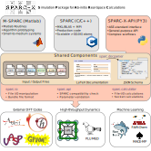

SPARC-X-API: A Python API for the SPARC-X DFT Code


SPARC-X-API is a versatile Python API for the real-space density functional (DFT) package SPARC distributed under the GPLv3 license. SPARC-X-API leverages the powerful Atomic Simulation Environment (ASE) framework for manipulating input / output files, as well as running DFT calculations and analysis via the SPARC code written in C/C++. Key features include:
ASE-compatible I/O format for SPARC files
A JSON Schema interfacing with SPARC’s C/C++ code for parameter validation and conversion
A comprehensive calculator interface for SPARC with file I/O and socket-communication support.
Overview
SPARC-X-API is part of the SPARC-X project, a collection of open-source packages aim to provide modern and efficient implementation of real space DFT simulations, led by the research groups of Phanish Suryanarayana and Andrew J. Medford from Georgia Tech. The name SPARC stands for Simulation Package for Ab-initio Real-Space Calculations, which comes in two variations:
M-SPARC: self-consistent Matlab code for algorithm prototyping and testing
SPARC: C/C++ implementation of efficient production code scaling up to millions of atoms
The SPARC-X project shares common input / output file formats, and parameter specification. SPARC-X-API serves as the interface that connects the core SPARC-X components with external workflows, as illustrated in the diagram below.

Quick start
SPARC-X-API is straightforward to install and use, adhering to the ASE standard for seamless integration into other computational workflows.
Installation
Install SPARC-X-API via
conda.
conda install -c conda-forge sparc-x-api
Install the pre-compiled SPARC binary alongside SPARC-X-API (Linux only).
conda install -c conda-forge sparc-x
Note: the official SPARC binary in the conda-forge channel does not come with socket support yet. Please follow this instruction if you wish to install socket-compatible SPARC code
Setup SPARC-X-API
Preferences for SPARC-X-API and SPARC C/C++ code can be defined in ASE configuration file, located at ~/.config/ase/config.ini, such as following example:
[sparc]
; `command`: full shell command (include MPI directives) to run SPARC
command = srun -n 24 path/to/sparc
; `psp_path`: directory containing pseudopotential files (optional)
psp_path = path/to/SPARC/psps
; `doc_path`: directory for SPARC LaTeX documentation to build JSON schema on the fly (optional)
doc_path = path/to/SPARC/doc/.LaTeX/
Reading / Writing SPARC files
SPARC-X-API provides a file format sparc compatible with the ASE
ioformat, which treats the calculation directory containing SPARC
in-/output files as a bundle:
Read from a SPARC bundle
# `format="sparc"` should be specified
from ase.io import read
atoms = read("sparc_calc_dir/", format="sparc")
Write input files
# `format="sparc"` should be specified
from ase.build import bulk
atoms = bulk("Al") * [4, 4, 4]
atoms.write("sparc_calc_dir/", format="sparc")
Visualizing Atomic Structures in SPARC Files
You can use the ase gui commandline tool to visualize SPARC files:
ase gui sparc_calc_dir/*.ion
Parameter Validation with JSON Schema
SPARC-X-API allows user to validate SPARC parameters based on a JSON schema that is parsed from the LaTeX documentation of the SPARC-X project. To get help for a specific parameter:
from sparc.api import SparcAPI
print(SparcAPI().help_info("LATVEC"))
Running SPARC Calculations
SPARC-X-API provides two ways to run a DFT calculation via SPARC C/C++ code:
File I/O mode: classic way to drive SPARC calculation by running a standard SPARC process with input files. Suitable for things implemented internally in SPARC C/C++ codes:
Single point evaluation
Band structure calculations
Structural optimization (SPARC internal routines)
Ab-init molecular dynamics (AIMD)
Socket mode: run a background SPARC process while providing atomic positions and other data via socket communication. Suitable for:
Hundreds / thousands of single point DFT evaluations
Integration with complex algorithms / workflows
Combination with internal and external machine learning (ML) force fields
The calculator interface in SPARC-X-API is designed to be intuitive for users familiar with the ASE calculator interfaces for other DFT packages (e.g. VASP, Quantum ESPRESSO, GPAW, Abinit, etc):
File I/O mode
Run a single point DFT calculation with Dirichlet boundary conditions:
from sparc.calculator import SPARC
from ase.build import molecule
atoms = molecule("H2", cell=(10, 10, 10), pbc=False)
atoms.calc = SPARC(h=0.25, directory="run_sp") # 0.25 Å mesh spacing
atoms.get_potential_energy()
atoms.get_forces()
Socket mode
Note: A socket-compatible SPARC binary installation is required. Please check this instruction for more details.
Switching to the socket mode requires just a few parameters, ideal for workflows with hundreds or thousands of single point DFT calls with much less overhead and more flexibility. An example for optimization using socket mode and ASE optimizer:
from sparc.calculator import SPARC
from ase.build import molecule
from ase.optimize import BFGS
atoms = molecule("H2", cell=(10, 10, 10), pbc=False)
atoms.center()
atoms.calc = SPARC(h=0.25, directory="run_sp", use_socket=True) # 0.25 Å mesh spacing
opt = BFGS(atoms)
with atoms.calc:
opt.run(fmax=0.01)
Documentation
Please check the full documentation for details regarding installation, usage, troubleshooting and contribution guidelines.
How to cite
If you find SPARC-X-API help, please consider cite the relevant publications below:
The SPARC-X-API package itself: Tian et al. 2025
The SPARC C/C++ code
v2.0 Zhang et al., 2024
v1.0 Xu et al., 2021
The M-SPARC Matlab code
v2.0 Zhang et al., 2023
v1.0 Xu et al., 2020
For a full list of publications in the SPARC-X project please refer to:
Acknowledgment
The development of SPARC-X-API is supported by the U.S. Department of Energy, Office of Science, under Grant No. DE-SC0019410 and DE-SC0023445.